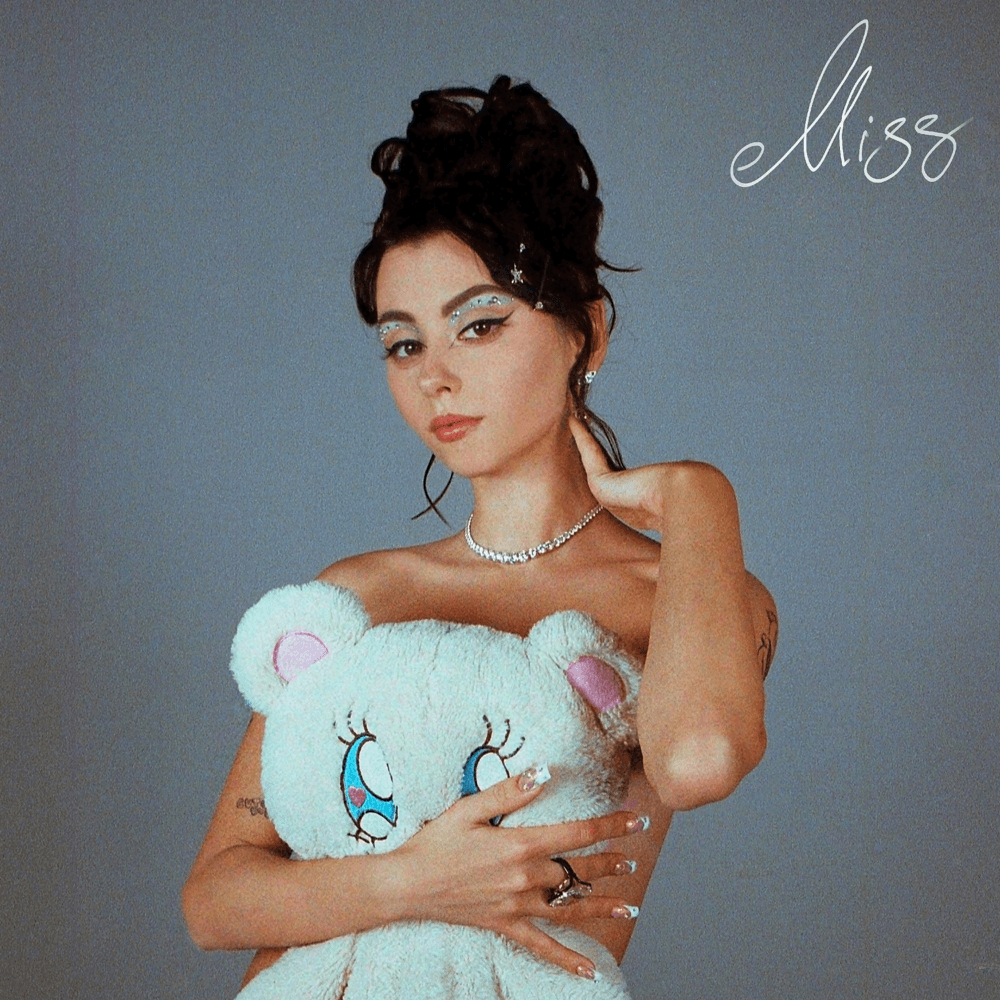
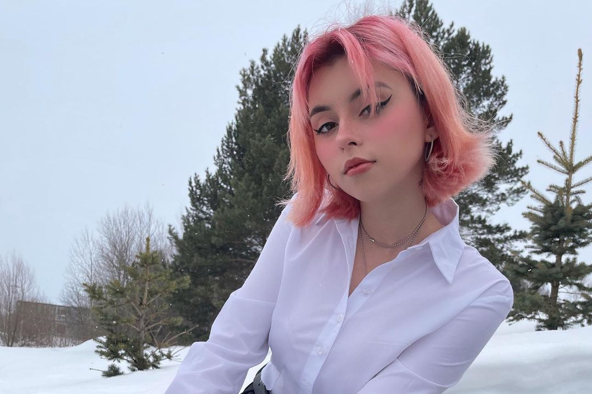

Барбисайз


А, е-е
Hi-hi-hi, Mr. Gore
Е-е-е-е-е
Барби из трущоб
Выстрел, в тебя летит мой shot
У меня капает на счёт
У тебя капает со щёк
Eeny, meeny, miny, moe
Узнают меня в лицо
Знаю, хочешь быть со мною рядом
Но тебе до MAYBE далеко
Я — королева джунглей в розовой шубе
Девочка-бомба, hola!
Я прихожу в стрипушник
Говорю: "Сучки, эй, мамочка дома!"
Easy, у меня в голове цифры
В cup'е свежевыжатый цитрус
Bitches, делаю чисто
Мой стилист — стилист твоего стилиста
Эй, дора! (А?) Готова? (Да)
В моих глазах доллар (бакс)
Культовей Игги Попа
Плюс у меня как у Игги попа (факт)
Знаю, очень неприятно (что)
Что твой мальчик со мной рядом
Нет, не расстраивайся, зайка
Я-я-я верну его обратно (maybe!)
Barbiesize girl, детка влезет в твой карман
Barbiesize girl, и я больше не твоя
Barbiesize girl, ты поверишь в мой обман
Мой обман, и я больше не твоя (е)
След аромата духов
Но ты меня не найдёшь
Снова шпионишь за мной
Но лучше б следил за собой
Выгляжу, словно с обложки GQ (у-у)
Щёки в помаде, размазана тушь
Острый, как лезвие, мой маникюр
Дверь на засов, ты надолго усну-ул
Barbiesize girl, детка влезет в твой карман
Barbiesize girl, и я больше не твоя
Barbiesize girl, ты поверишь в мой обман
Мой обман, и я больше не твоя
Латексные шмотки, пушки, мы — Ангелы Чарли
Я в него стреляю, мои глазки, словно лазер, м-м
Мальчик изменял и думал, что это нормально
Мы оставим рану в сердце, что окажется летальной
Е, е, новенький скайс
На страже порядка, как Totally Spies (а-а)
Е, е, делаю slice (а-а)
Заберём твоё сердце — такой у нас price
Маленькие стервы, но с огромными глазами
Да, я не исправлюсь, но ты это и так знаешь
Эй-йоу, я готова, выпускаю всю обойму
Я на подстраховке, за плечом висит винтовка, а
Миссия — пять звёзд
Палит коп из вертолёта
Не останется и следа, мальчик
Ты связался с профи
У-у, а-а-а, е-е-е
Barbiesize girl, детка влезет в твой карман
Barbiesize girl, и я больше не твоя
Barbiesize girl, ты поверишь в мой обман
Мой обман, и я больше не твоя
Barbiesize girl, детка влезет в твой карман
Barbiesize girl, и я больше не твоя
Barbiesize girl, ты поверишь в мой обман
Мой обман, и я больше не твоя
Навела прицел я
(Бум-бум!) Вижу свою цель, ты — мишень
Со мной, детка, кукла Bratz, поднимаем свой баланс
(Бум!) Ага, ты упустил шанс
Биография
Детство
Дарья родом из Саратова. В детстве она увлекалась поп-музыкой,
вначале слушая русских исполнителей, которых транслировали по радио,
но позже заинтересовавшись и зарубежными артистами.
Сама Дарья к своим любимым песням относила
«When You’re Gone» Аврил Лавин и «If I Were a Boy» Бейонсе.
Несмотря на желание девочки заниматься в музыкальной школе,
родители были против того, чтобы давать ей классическое образование.
Дарья пробовала брать уроки классической гитары, но бросила занятия сама,
посчитав их скучными и неинтересными.
Позднее, в девятом классе,
она всё же решила самостоятельно изучить одну песню для школьного выступления — это была «Radioactive» от Imagine Dragons.
Удачный концерт вдохновил девушку продолжить освоение гитары.
Начало творческого пути
Под влиянием группы The Retuses Дарья начала записывать кавер-версии любимых песен.
Изначально она повторяла те же песни,
что звучали в исполнении лидера The Retuses Михаила Родионова — «Шаганэ», «Заметался пожар голубой».
Каверы песен Дарья начала записывать в пятнадцатилетнем возрасте,
когда училась в девятом классе школы.
Через полгода она впервые придумала и записала собственную песню,
но посчитала попытку неудачной — каверы в её исполнении нравились окружающим больше,
чем её собственное творчество.
В 2017 году интересы Дарьи изменились — вместо инди-рока её заинтересовал эмо-рэп,
в частности, альбом 17 XXXTentacion. Это было связано, в частности,
с эмоциональными проблемами после перехода в новую школу, где девушку травили одноклассники.
Первое живое выступление Дарьи состоялось в подольском клубе «Смена» — это был концерт,
организованный пабликом «Вечно XVII».
Дарья исполняла популярные грустные песни, такие как «Заметался пожар голубой» на стихи Есенина,
«Выхода нет» группы «Сплин» и другие.
Сначала Дарья записывала свои песни на IPhone.
Позже она познакомилась с битмейкером,
который помог исполнительнице с записью инструментальных партий и аранжировками.
Одной из первых песен, записанных таким образом, стала «Таял» Леонида Фёдорова.
Певице понравилось исполнять песни под аккомпанемент битов,
и она решила продолжить сотрудничество.
Позже они начали записывать собственные песни Дарьи,
часть из которых попала в её дебютный альбом.
В то время Дарья выступала под никнеймом «Mental Affection» и писала депрессивные песни.
Одна из них — получившая название «Рецидив» — была основана на тексте знакомого,
у которого были проблемы с родителями и возникали мысли о самоубийстве;
позднее Дарья признавалась, что ей стыдно за эту песню.
Исполнительница также открыла для себя автотюн и стала использовать его в своих композициях,
первой из которых стала «Не ругаюсь матом»,
которую Дарья посчитала настоящим творческим прорывом.
Дебютный альбом
Дебютный мини-альбом исполнительницы получил название «Я не коммерция»
и был выпущен в 2019 году в собственном паблике.
К тому времени Дарья отказалась от псевдонима «Mental Affection»,
который было трудно запомнить поклонникам, и стала выступать под именем «Дора»,
ведь именно так Дарью называла её мама.
За неделю количество пользователей, подписанных на Дарью в социальных сетях,
увеличилось вдвое. Когда количество подписчиков достигло 40-50 тысяч,
Дарья стала задумываться о выпуске полноценного альбома.
Она познакомилась с рэпером Владимиром Галатом из группы «Френдзона»
и вместе они придумали песню «Дорадура» и ещё доделали несколько композиций.
Кстати, трек «Дорадура» был единственным, который создавался с самого нуля в её дебютном альбоме.
В итоге эти песни вошли в состав альбома «Младшая сестра»,
записанного при поддержке знакомых Галата, которые занимались битмейкингом и сведением.
Несмотря на сомнения авторов, «Дорадура» стала настоящим хитом.
Сама Дарья не была удивлена ростом популярности,
так как целенаправленно шла к этому на протяжении нескольких лет,
равняясь на творчество Гречки и Монеточки, которые «выстрелили» подобным образом ранее.
«Младшая сестра» представляла собой поп-роковое сочетание девичьего вокала
и тяжёлой гитарной музыки.
Сама Дора называла свой особенный стиль «кьют-роком» (англ. cute rock),
что переводится как «милый рок».
Песни были посвящены вопросам,
которые волновали подростковую аудиторию — отношениям между молодыми людьми,
социальным сетям, завидующим подругам, свиданиям в интернете и пр.
Страница Доры Вконтакте набрала более 90 тысяч подписчиков
(больше чем, к примеру, у группы «Буерак»),
а за первые сутки альбом проиграли в соцсетях более 300 тысяч раз.
В марте 2020 года певица выступила на Первом канале в программе «Вечерний Ургант»,
исполнив песню «Дорадура».
Второй студийный альбом «Боже, храни кьют-рок» был выпущен 18 декабря 2020 года.
Песня «Втюрилась», исполненная Дорой на итальянском языке под названием «Innamorata»,
была включена в новогодний выпуск «Вечернего Урганта» Ciao, 2020!,
вошедший в тренды русского и итальянского YouTube.